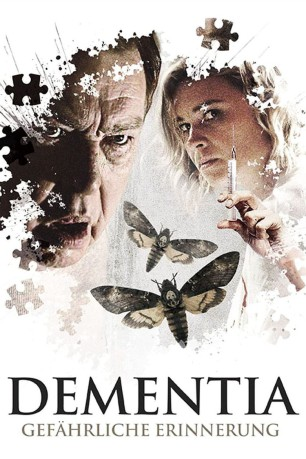
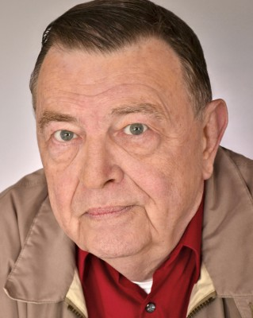

#9083 Dementia - Gefährliche Erinnerung
 
 IMDB-Wertung: 5.2 / 10
IMDB-Wertung: 5.2 / 10  Metascore: 0
Metascore: 0 
George Lockhart ist dement. Seine Familie hält es daher für besser, den tapferen Vietnam-Veteran rund um die Uhr betreuen zu lassen. Die junge Krankenschwester Michelle bekommt den Job. Doch George merkt schnell, dass mit ihr etwas nicht stimmt. Sie hat eine dunkle Seite, die der alte Mann auf schmerzhafte Weise zu spüren bekommt. Als er um Hilfe bittet, glaubt ihm jedoch niemand. Nur seine Enkelin Shelby schöpft Verdacht und kommt hinter ein blutiges Geheimnis, das George seit Jahren behütet. Holt ihn jetzt seine eigene dunkle Vergangenheit ein?
Jahr: 2015
Dauer: 86 Minuten
FSK: 16
Land: USA Studio: IFC FilmsTonspuren: DTS - ,
Untertitel: Deutsch,
Auflösung: 1080p (1920x804) Größe: 4014 MB
Genre: Thriller, Horror, Drama
Regisseur: Mike Testin
Drehbuch: Danny Cannon
Soundtrack: Jason Turbin
Darsteller:
-  Gene Jones als George Lockhart
- Kristina Klebe als Michelle
- Hassie Harrison als Shelby Lockhart
- Peter Cilella als Jerry Lockhart
 Richard Riehle als Sam
Richard Riehle als Sam Steve Agee als Larry
Steve Agee als Larry- Julian Bane als Bernie Hirsh
- Justin Benson als Nurse Hollings
- Morgan Peter Brown als Walter
- Joe Burke als Store Manager
- Tony Denison als MC
- Molly McQueen als Rose
- Ruben Pla als Dr. Chandler
- Marc Senter als Young George Lockhart
- Graham Skipper als Hendricks
- Suzanne Voss als Nurse Thompson
Datei: X:\2015(A-F)\Dementia - Gefährliche Erinnerung (2015, FSK16, 1920x804).mkv seit 19.07.2018
Festplatte: HD 2015(A-Z)
 Es gibt insgesamt 143 Filme in der Gruppe '2015(A-F)'
Es gibt insgesamt 143 Filme in der Gruppe '2015(A-F)'